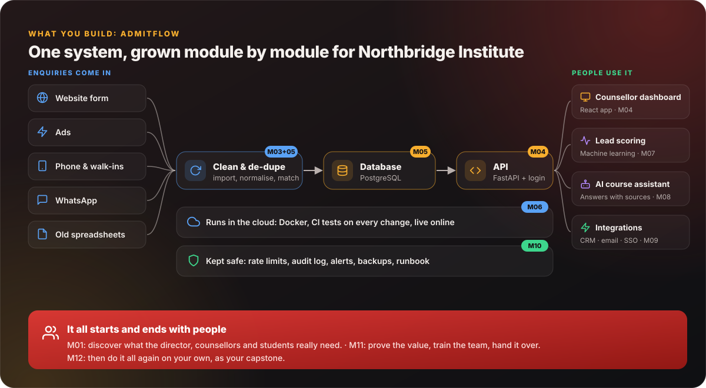

On this page
- How it grew, module by module
- Module 10: hardening and operations
- Module 09: integrations
- Module 08: course assistant and follow-up drafts
- Module 07: lead scoring
- Module 06: containers, CI and deployment
- Module 05: SQL database, pipeline and admissions matching
- Module 04: web API and counsellor dashboard
- Module 03: command-line lead manager
AdmitFlow
The running project for the whole handbook: an admissions system for a fictional educational institute that grows from a discovery document into a deployed, AI-assisted production system.
- Client brief: BRIEF.md. Start here.
- How it grows module by module: ROADMAP §5

How it grew, module by module
| Module | Added |
|---|---|
| 01 | Discovery pack (documents only) |
| 02 | Sample data + terminal analysis script |
| 03 | Python CLI lead manager with tests |
| 04 | FastAPI backend, React dashboard, login and roles |
| 05 | SQL storage, migrations, ingestion pipeline, admissions matching |
| 06 | Containers, Compose, CI with PostgreSQL, deployment guide |
| 07 | Lead scoring (and the honest finding about response speed) |
| 08 | Course assistant (RAG), evaluation set, follow-up drafts with approval |
| 09 | Webhooks, outbox, CRM sync, Google sign-in, MCP server |
| 10 | Rate limits, redaction, audit log, metrics, alerts, backups, runbook |
| 11 | User guide and handover pack |
The sections below describe each stage, newest first. This folder holds the final state; each module's build page lists the files that module introduced.
Module 10: hardening and operations
- Rate limits (
/public/*per IP, login per username), security headers, CSP on the dashboard; log redaction; minimized AI prompts. - Audit log (
GET /audit, admins), migration0004. Metrics at/metrics(setADMITFLOW_METRICS_TOKEN); alert rules indeploy/monitoring/alerts.yml. admitflow backup --to …andadmitflow verify-backup …(SQLite). Operations:docs/runbook.md.
Module 09: integrations
- Signed website webhook
POST /public/webhooks/website-form; Google sign-inPOST /auth/google. admitflow send-approved(outbox: email/WhatsApp, approved drafts only),admitflow crm-sync(idempotent),admitflow mcp --user <name>(MCP server, Python 3.10+).- Install:
pip install -e ".[api,db,integrations,dev]". Migration0003. Decisions: ADR-006.
Module 08: course assistant and follow-up drafts
admitflow ask "How much is Data Analytics?"answers fromdata/course_docswith citations;admitflow eval-assistantruns the 52-case evaluation.- API:
POST /public/assistant/ask(public),POST /leads/{id}/drafts,GET /drafts,POST /drafts/{id}/approve|reject. - Engines: offline (default, free, deterministic) or Claude (
ADMITFLOW_LLM=claude,pip install -e ".[llm]", Python 3.10+). Migration0002adds the drafts table. - Decisions: ADR-005.
Module 07: lead scoring
admitflow train-model data/historical_leads.csv --out models/lead_score.joblibtrains on the 2024 intake, tests on 2025, compares with a baseline, and prints enrolment by response time.- API:
GET /leads/{id}/scoreandGET /leads/priority(setADMITFLOW_MODEL). Without a model these return 503; everything else works. Install with themlextra. - Decision and its evidence: ADR-004. New data:
data/historical_leads.csv.
Module 06: containers, CI and deployment
- Run everything locally:
cp .env.example .env(set real values), thendocker compose up --build. Dashboard http://localhost:8080, API http://localhost:8000/docs. - Images:
Dockerfile(API: multi-stage, non-root, health check) andweb/Dockerfile(static build + nginx). - CI:
.github/workflows/admitflow-ci.yml: tests on Python 3.9 and 3.12 against JSON, SQLite and real PostgreSQL, frontend build, image build and smoke test. - Deploying:
deploy/README.md: Cloud Run walkthrough with AWS/Azure equivalents, plus a teaching Terraform example. - New endpoint
/ready(readiness: checks storage).admitflow servereadsHOSTandPORTfrom the environment.
Module 05: SQL database, pipeline and admissions matching
- SQL storage (
admitflow/db.py): setDATABASE_URL(e.g.sqlite:///admitflow.dborpostgresql+psycopg://…), runalembic upgrade head. The API and CLI switch automatically. - Pipeline (
admitflow/pipeline.py):admitflow ingest --website … --ads … --walkins …(idempotent, audited, reconciled),admitflow match-admissions data/admissions_export.csv,admitflow report. - Migrations:
migrations/(Alembic). Install withpip install -e ".[api,db,dev]". - New sample file:
data/admissions_export.csv: 25 enrolments from the student information system (22 match a lead; 3 don't, deliberately).
Module 04: web API and counsellor dashboard
- API (
admitflow/api/): FastAPI with login, roles, leads, notes, follow-ups and stats. Install withpip install -e ".[api,dev]", setADMITFLOW_SECRET_KEY, create users withadmitflow create-user, runadmitflow serve, then see http://localhost:8000/docs. - Dashboard (
web/): React + TypeScript.cd web && npm install && npm run dev, then open http://localhost:5173. - Decisions:
docs/adr/. - Configuration:
ADMITFLOW_STORE(JSON file),ADMITFLOW_SECRET_KEY(required for the API),ADMITFLOW_CORS_ORIGINS(defaulthttp://localhost:5173),VITE_API_URL(dashboard → API).
Module 03: command-line lead manager
A standard-library-only Python tool that imports the three channel exports, normalizes names, phones, emails and courses, deduplicates students, and lets counsellors search and export.
Install
cd projects/admitflowpython3 -m venv .venv && source .venv/bin/activatepython -m pip install --upgrade pippython -m pip install -e ".[dev]"Use
admitflow import --website data/leads_sample.csv --ads data/ad_leads.csv --walkins data/walkins.csvadmitflow statsadmitflow search "nguyễn"admitflow list --source whatsapp --course nursingadmitflow export walkins.csv --source walk-inLeads are stored in leads.json, or wherever ADMITFLOW_STORE points.
Deduplication rule
| Match | Result |
|---|---|
| Same lead ID | Same record (the file was imported again) |
| Same email | Same person |
| Same phone and same name | Same person |
| Same phone only | Not merged: families often share a phone |
The earliest enquiry is kept, and every channel the person used is recorded in sources.
Test
pytestRuns the full suite with coverage (fails below 80%). API tests are skipped automatically if the api extras aren't installed. Frontend: cd web && npm test.
Layout
| File | Responsibility |
|---|---|
admitflow/models.py | Lead dataclass |
admitflow/normalize.py | Pure cleaning functions |
admitflow/importers.py | One reader per export format; reports rejected rows |
admitflow/dedupe.py | Merge rule above |
admitflow/store.py | JSON store and CSV export |
admitflow/cli.py | Command-line interface |
Sample data
| File | Rows | Quirks |
|---|---|---|
data/leads_sample.csv | 120 | Blank lines, inconsistent channel names, "Last, First" names |
data/ad_leads.csv | 60 | Different columns, ISO timestamps, many phone formats, names in many alphabets |
data/walkins.csv | 25 | Excel BOM, day-first dates, ALL-CAPS names, phone or email in one column |
data/admissions_export.csv | 25 | Different system: student numbers, "SURNAME, Given" names, phones with a leading 0 |
All people, emails and phone numbers are fictional. Phones use the reserved 555-01xx range; emails use example.* domains.